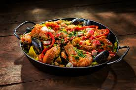
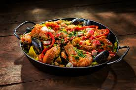
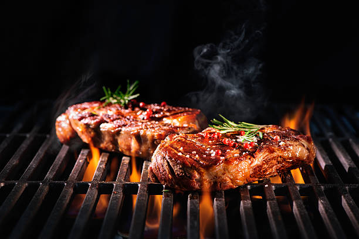
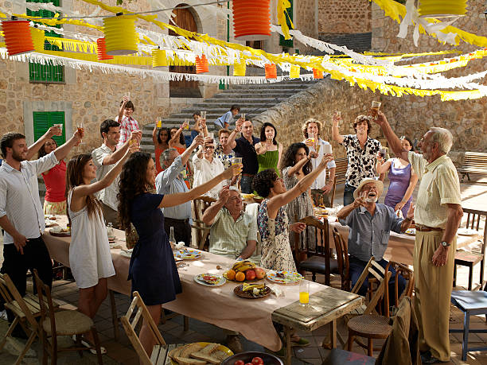

España – La Paella
La paella representa la unión y la celebración familiar en España.
¿Sabías que...?
Se celebra el **Día Mundial de la Paella** el 20 de septiembre en Valencia.
México – Los Tacos
“En México, los tacos son más que comida — son una forma de vida.”
Al Pastor
Carnitas
Asada

Perú – El Ceviche
El ceviche es el corazón del Perú — fresco, ácido y lleno de historia.
Argentina – El Asado
El asado argentino es símbolo de amistad, familia y tradición.


Cuba – Ropa Vieja
Cada plato cubano lleva ritmo, como su música. El secreto está en el sofrito y la cocción lenta.
💬 Palabras Nuevas
Arroz
Carne
Mar
Sabor
Fiesta
Cultura
¡Haz clic o pasa el ratón sobre la palabra para ver su significado!